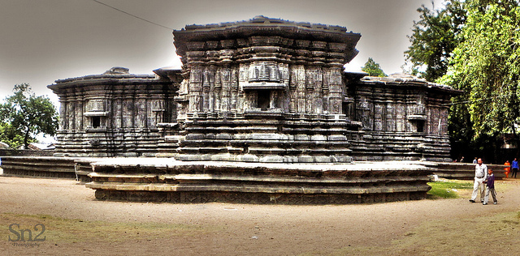
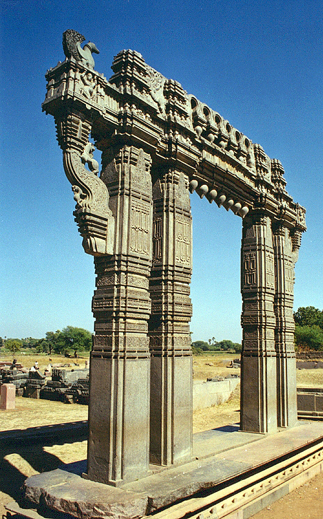
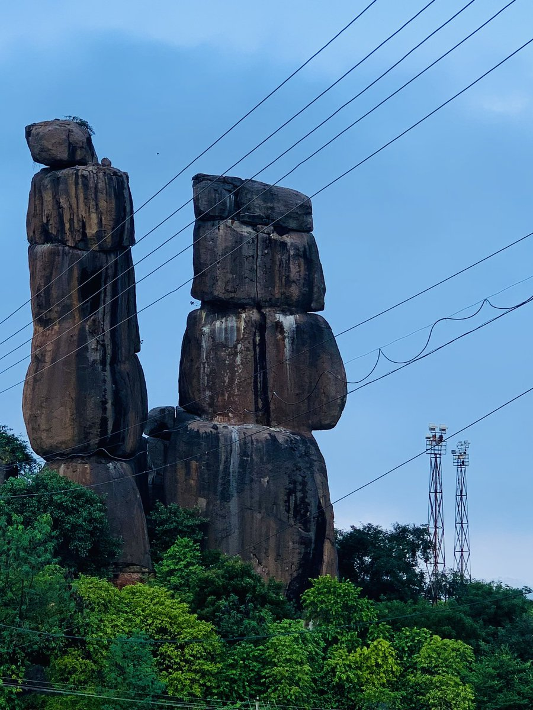
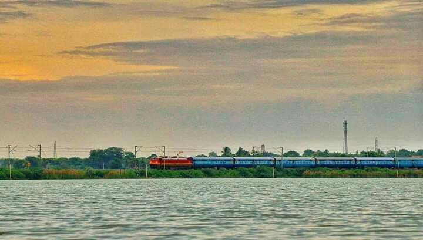

Being from the traditional town of Warangal, which falls in the Telangana state in India, I am overwhelmed with pride. Warangal is a city of cultural legacies where guideposts lead to glimpses of the history that is 9 centuries old. This is going to be a place for me to display some of the cool, defining landmarks in my town which separate it from all others.
| Landmark | Description | Image |
|---|---|---|
| Thousand Pillars Temple | A graceful creation of the Kakatiya dynasty, with the masterpieces of the intricate carvings and beautiful sculpture, existing. |  |
| Warangal Fort | Made up of a wonderful colossal fort built during the 13th century, showcasing the gloriousness of the Kakatiya rulers. |  |
| Mettu Gatta | Mettu Gatta is a gigantic basalt formation, which may be seen in the course adjacent to the Thousand Pillars (Kailasanathar) Temple. Kakatiyudu boasts remarkable carvings and intricate sculptures of the Kakatiya time period. |  |
| Waddepally Lake and Dharmasagar Lake | From the imposing Shikhi Reservoir to the scenic Sriram Sagar, these are the two major water bodies in Warangal that provide amazing surroundings and a varied range of recreational spots. |  |